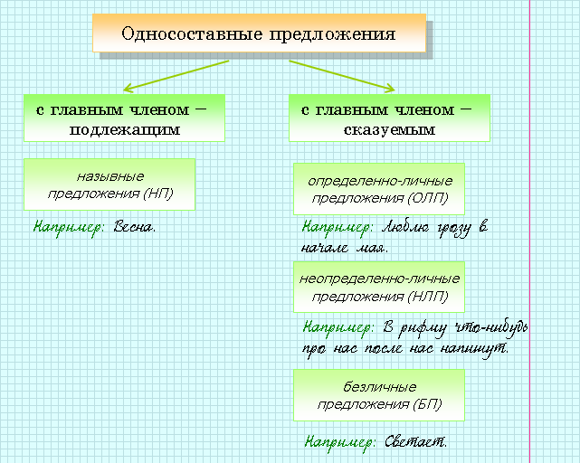

|
Односоставными называются предложения, в которых есть только один главный член (подлежащее или сказуемое). |
 |
Я люблю зимний лес
(двусоставное предложение, в котором я − подлежащее, люблю
− сказуемое). Вот не спится человеку (односоставное предложение, в котором не спится − сказуемое). Тишина (односоставное предложение, в котором тишина − подлежащее). |
Односоставные предложения нельзя считать неполными, так как одного главного члена достаточно для понимания смысла этого предложения.

 |
В односоставных предложениях с главным членом-сказуемым именно форма сказуемого (наклонение, время, лицо, число) подсказывает, кто и (или) когда совершает действие. |
 |
В ОЛП деятель определен. | |
Люблю лето. = Я люблю лето |
|
В НЛП деятель подразумевается, но четко не определен. | |
В нашем районе построили новую школу. = В нашем районе строители (они, какие-то люди) построили новую школу. |
|
В БП субъекта действия нет и не может быть. | |
Стемнело. Не спится. |
|
Определенно-личными называются односоставные предложения, в которых главный член (сказуемое) выражен глаголом в форме: a) 1 и 2 лица единственного и множественного числа изъявительного наклонения (в настоящем и в будущем времени); б) 1 и 2 лица единственного или множественного числа повелительного наклонения. |
Название объясняется тем, что деятель (субъект действия), хоть и не назван, но определен и может быть назван личными местоимениями 1 и 2 лица: я, мы, ты, вы.
|
Иди сюда! (повелительное наклонение, 2 лицо − ты). Уже иду. (изъявительное наклонение, настоящее время, 1 лицо − я). Работаем с огоньком. (изъявительное наклонение, настоящее время, 1 лицо − мы). Читайте больше! (повелительное наклонение, 2 лицо − вы). |
|
Поэтому форма изъявительного наклонения прошедшего времени не встречается в ОЛП: в прошедшем времени глаголы не имеют категории лица. |
|
Я учусь в 8 классе (двусоставное предложение). Учусь в 8 классе (ОЛП). |
|
В неопределенно-личных предложениях главный член имеет форму сказуемого и может быть выражен: • глаголом в форме 3 лица множественного числа настоящего (будущего) времени. • глаголом в форме множественного числа прошедшего времени. |
|
На главной площади поставили новый
памятник. На главной площади поставят новый памятник. На заводе ждут приезда директора. |
|
В НЛП субъект действия мыслится как неопределенное лицо, в них важен сам факт совершения действия, а не то, кто это действия совершает. |
|
ОЛН и НЛП могут иметь обобщенное значение, то есть обозначать действие, которое относится к обобщенному лицу (ко всем). Обобщенно-личные предложения распространены в пословицах, поговорках, афоризмах. |
|
Например: Любишь кататься — люби и саночки возить (ОЛП
с обобщенным значением). Цыплят по осени считают (НЛП с обобщенным значением). |